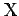
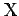
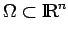

Sei ein Maßraum und p eine reelle Zahl . Für eine meßbare Funktion f ist |f|p ebenfalls meßbar, so daß
definiert (und möglicherweise gleich  ) ist. Eine meßbare Funktion
) ist. Eine meßbare Funktion  heißt zur p-ten Potenz integrierbar, p-fach integrierbar oder p-fach summierbar, wenn gilt oder, äquivalent dazu, wenn |f|p integrierbar ist.
heißt zur p-ten Potenz integrierbar, p-fach integrierbar oder p-fach summierbar, wenn gilt oder, äquivalent dazu, wenn |f|p integrierbar ist.
Für jedes p mit bezeichnet man mit oder oder ganz ausführlich mit die Menge aller zur p-ten Potenz bezüglich  auf  summierbaren Funktionen, wobei für p=1 die vereinfachte Bezeichnung vereinbart wird und für p=2 die Funktionen quadratisch summierbar heißen.
auf  summierbaren Funktionen, wobei für p=1 die vereinfachte Bezeichnung vereinbart wird und für p=2 die Funktionen quadratisch summierbar heißen.
Mit bezeichnet man die Menge aller meßbaren  -f.ü. beschränkten Funktionen auf und definiert das wesentliche Supremum einer Funktion f als
-f.ü. beschränkten Funktionen auf und definiert das wesentliche Supremum einer Funktion f als
Mit den üblichen Operationen für meßbare Funktionen und unter Berücksichtigung der Ungleichung von MINKOWSKI für Integrale ist für alle ein Vektorraum und eine Halbnorm auf . Mit der Vereinbarung, zu schreiben, wenn -f.ü. gilt, wird sogar ein Vektorverband. Zwei Funktionen nennt man äquivalent (oder deklariert man als gleich), wenn -f.ü. auf . Auf diese Weise werden Funktionen, die  -f.ü. übereinstimmen, identifiziert. Somit gewinnt man (mittels Faktorisierung der Menge nach dem linearen Teilraum Np-1(0)) eine Menge von Äquivalenzklassen, auf die kanonisch die algebraischen Operationen und die Ordnung übertragen werden können, so daß sich wieder ein Vektorverband ergibt, der jetzt mit oder (und entsprechend ausführlicher) bezeichnet wird. Seine Elemente heißen nach wie vor Funktionen, obwohl sie in Wirklichkeit Klassen äquivalenter Funktionen sind.
-f.ü. übereinstimmen, identifiziert. Somit gewinnt man (mittels Faktorisierung der Menge nach dem linearen Teilraum Np-1(0)) eine Menge von Äquivalenzklassen, auf die kanonisch die algebraischen Operationen und die Ordnung übertragen werden können, so daß sich wieder ein Vektorverband ergibt, der jetzt mit oder (und entsprechend ausführlicher) bezeichnet wird. Seine Elemente heißen nach wie vor Funktionen, obwohl sie in Wirklichkeit Klassen äquivalenter Funktionen sind.
Von Bedeutung ist nun, daß auf eine Norm ist ( steht dabei für die aus der Funktion f hervorgegange Äquivalenzklasse, die im weiteren einfach wieder mit f bezeichnet wird), und für alle p mit ein BANACH-Verband mit vielen guten Verträglichkeitsbedingungen zwischen Norm und Ordnung, bei p=2 mit als Skalarprodukt sogar ein HILBERT-Raum wird (s. Lit. 12.15).
Häufig wird für eine meßbare Teilmenge  der Raum  betrachtet. Seine Definition bereitet wegen Schritt 5 bei der Einführung des Integrals aber keine Schwierigkeiten.
betrachtet. Seine Definition bereitet wegen Schritt 5 bei der Einführung des Integrals aber keine Schwierigkeiten.
Die Räume ergeben sich auch als
Vervollständigung (s. auch Abschnitt BANACH-Räume) des mit der Integralnorm versehenen nichtvollständigen normierten Raumes  aller stetigen Funktionen auf der Menge (s. Lit. 12.21).
aller stetigen Funktionen auf der Menge (s. Lit. 12.21).
Sei eine Menge von endlichem Maß, d.h. , und gelte für p1, p2 die Beziehung . Dann gelten und mit einer nicht von x abhängenden Konstanten für die Abschätzung , wobei die Norm des Raums bezeichnet.